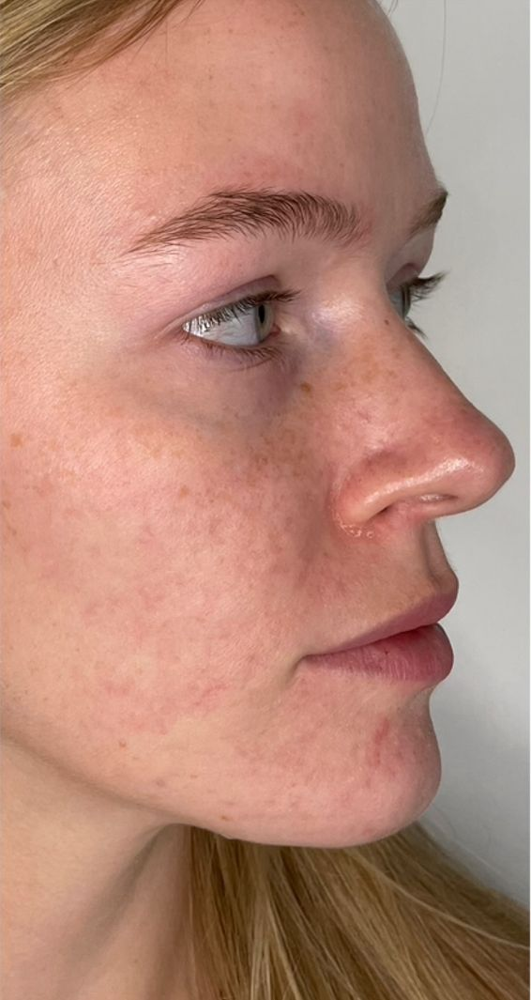
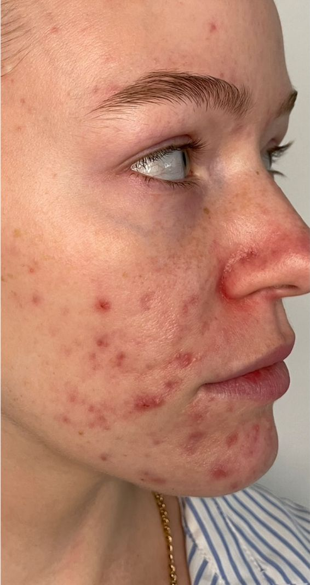
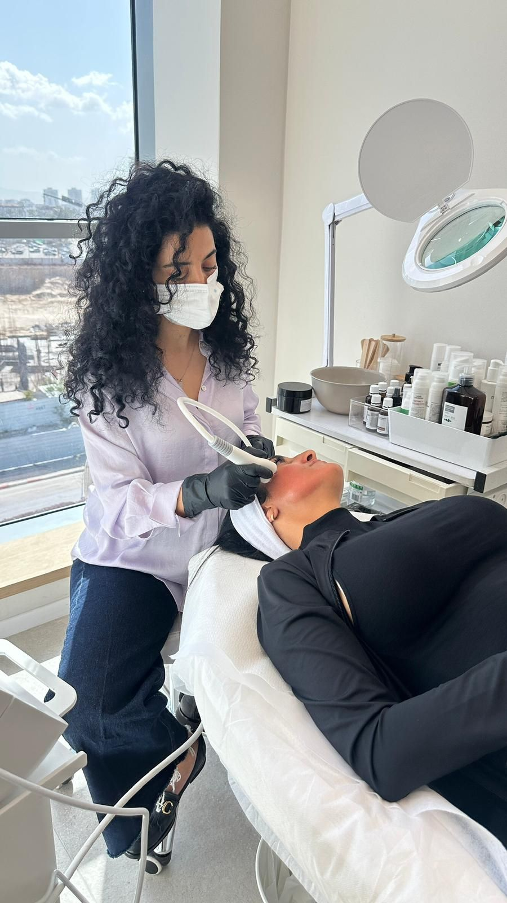
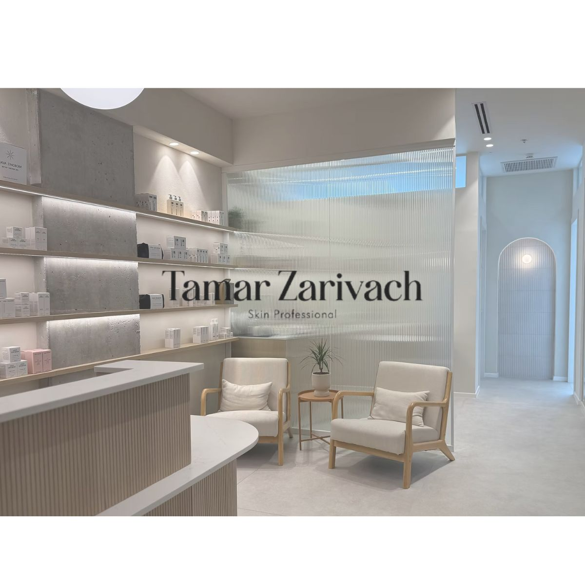
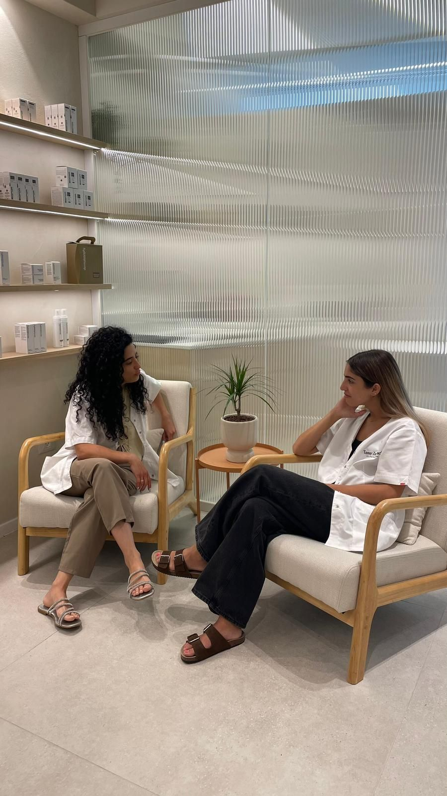

הקליניקה · ש״י עגנון 16The clinic · 16 Shai Agnon St
תמר זריבץTamar Zarivach
המרכז לטיפול באקנה, פוסט אקנה ושיקום העורA centre for acne, post-acne and skin rehabilitation
לפני ואחריBefore and after
צילומים מתוך העמוד של הקליניקה בגוגל.Photos from the clinic’s own Google page.


מה עושים בקליניקהWhat happens at the clinic
חמישה טיפולים, מדף אחרי מדף.Five treatments, shelf by shelf.
-
אקנה פעילActive acne
טיפול שתמר מתאימה לעור של כל אחת.Treatment Tamar tailors to each skin.

-
פוסט אקנהPost-acne
עבודה על הסימנים שהאקנה השאירה.Work on the marks acne left behind.
-
שיקום העורSkin rehabilitation
תהליך מסודר, שלב אחרי שלב.An orderly process, step by step.

-
טיפולי פניםFacials
טיפולי פנים מקצועיים, במכשירים מתקדמים.Professional facials with advanced devices.
-
עיצוב גבותBrow shaping
וגם גבות, באותה קליניקה.Brows too, at the same clinic.

תמר והצוותTamar and the team
יחס אישי, אוזן קשבת ועדינות: אלה המילים שחוזרות בביקורות.Personal attention, a listening ear and a gentle hand: the words that keep coming up in the reviews.
- דירוג בגוגלGoogle rating
- ביקורותreviews
- ימי פתיחה בשבועdays open a week
ש״י עגנון 16 · קרית מוצקין16 Shai Agnon · Kiryat Motzkin
מה כותבים בגוגלWhat people write on Google
ממוצע 5.0 מתוך 37 ביקורות.A 5.0 average from 37 reviews.
תמר מעניקה יחס אישי בזמן הטיפול ואוזן קשבת. היא תמיד שואפת להתפתח והיא דואגת לדייק את הטיפול לכל אחת באופן אינדיבידואלי!! היא עוזרת לי בתהליך שיקום העור בעקבות אקנה וגם פוסט אקנה. ממליצה מאוד!!
Tamar gives personal attention and a listening ear during the treatment. She always strives to grow, and makes sure to fine-tune the treatment for each woman individually!! She is helping me through rehabilitating my skin after acne and post-acne. Highly recommend!!
צוות מדהים, ראיתי שינוי משמעותי כבר תוך חודש! וזה אחרי שבאמת ניסיתי הכל. אין דברים כאלה
An amazing team, I saw a significant change within a month! And that is after I had really tried everything. Nothing like it.
תמר והצוות שלה מהממות! קשובות ורגישות ונותנות מענה תמיד לכל מה שצריך. ממליצה בחום!
Tamar and her team are wonderful! Attentive and sensitive, and always there with an answer for whatever you need. Warmly recommend!
המקום הכי מקצועי ונעים שיש! כל הצוות נשים מושלמות ונחמדות. טיפולים עם המכשירים הכי חדישים ואיכותיים שיש!
The most professional and pleasant place there is! The whole team are perfect, lovely women. Treatments with the newest, highest-quality devices there are!
תמרי היא המלאכית הפרטית שלי! עושה אצלה טיפולי פנים ועיצוב גבות והיא לגמרי הצילה אותי! עם האדיבות והעדינות שלה, הכנות והנכונות להגיע לתוצאה לא פחות ממושלמת בלי להתפשר על מוצרים. הרבה מעבר לטיפול עצמו, היא שינתה אצלי את הגישה וזה כל כך לא מובן מאליו. פשוט מדהימה!!! אחת לדור!
Tamari is my personal angel! I get facials and brow shaping with her and she totally saved me! With her courtesy and gentleness, her honesty and her drive to reach a result nothing short of perfect, without compromising on products. Far beyond the treatment itself, she changed my whole approach, and that is so not to be taken for granted. Simply amazing!!! One of a kind!
הודעה לתמרA message to Tamar
בוחרים, וההודעה נכתבת לבד.Pick, and the message writes itself.
-
על מה מדובר?What is it about?
-
באיזו שעה נוח?What time suits you?
-
שולחים בוואטסאפSend it on WhatsApp
שאלות קצרותQuick questions
איפה הקליניקה?Where is the clinic?
ברחוב ש״י עגנון 16 בקרית מוצקין.At 16 Shai Agnon Street, Kiryat Motzkin.
מתי אפשר להגיע?When is it open?
ראשון עד חמישי 9:00–20:00, שישי 9:00–14:00. בשבת סגור.Sunday to Thursday 9:00–20:00, Friday 9:00–14:00. Closed on Saturday.
במה מטפלים?What is treated here?
אקנה, פוסט אקנה ושיקום העור, וגם טיפולי פנים ועיצוב גבות.Acne, post-acne and skin rehabilitation, plus facials and brow shaping.
איך קובעים תור?How do I book?
בוואטסאפ או בטלפון, 052-510-0996.On WhatsApp or by phone, 052-510-0996.
ש״י עגנון 1616 Shai Agnon
קרית מוצקיןKiryat Motzkin